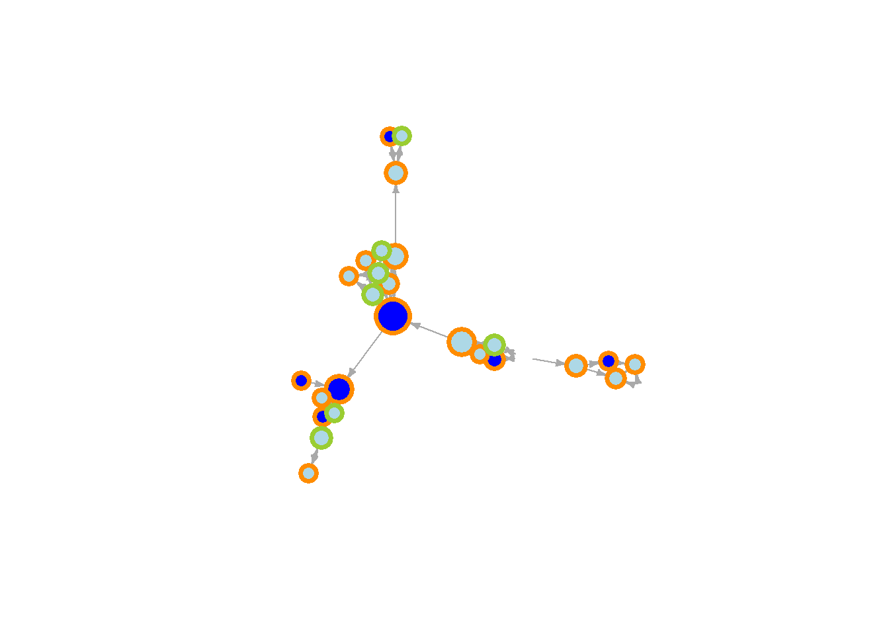
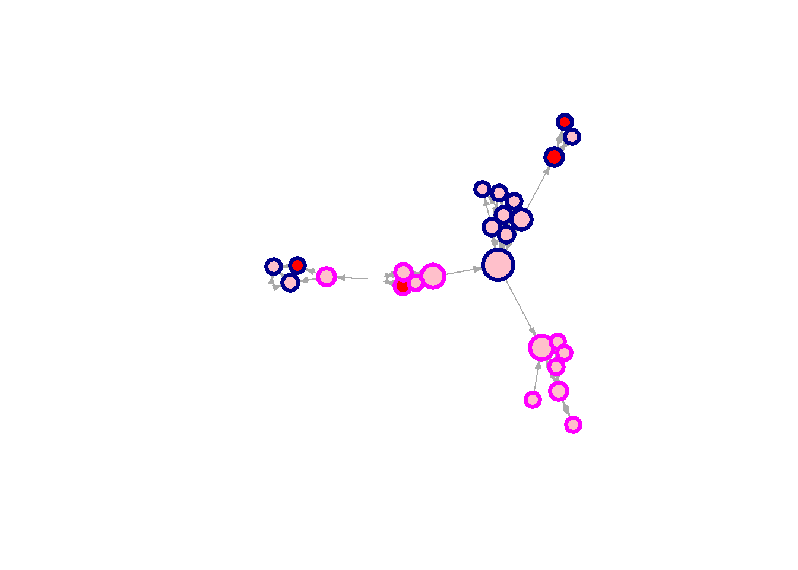

rm(list = ls()) # clean workspace
# custom functions
fpackage.check <- function(packages) {
lapply(packages, FUN = function(x) {
if (!require(x, character.only = TRUE)) {
install.packages(x, dependencies = TRUE)
library(x, character.only = TRUE)
}
})
}
fsave <- function(x, file = NULL, location = "./data/") {
ifelse(!dir.exists("data"), dir.create("data"), FALSE)
ifelse(!dir.exists("data"), dir.create("data"), FALSE)
if (is.null(file))
file = deparse(substitute(x))
datename <- substr(gsub("[:-]", "", Sys.time()), 1, 8)
totalname <- paste(location, datename, file, ".rda", sep = "")
save(x, file = totalname) #need to fix if file is reloaded as input name, not as x.
}
fload <- function(filename) {
load(filename)
get(ls()[ls() != "filename"])
}
fshowdf <- function(x, ...) {
knitr::kable(x, digits = 2, "html", ...) %>%
kableExtra::kable_styling(bootstrap_options = c("striped", "hover")) %>%
kableExtra::scroll_box(width = "100%", height = "300px")
}
packages = c("RSiena", "tidyverse", "stringdist", "stringi")
fpackage.check(packages)## [[1]]
## NULL
##
## [[2]]
## NULL
##
## [[3]]
## NULL
##
## [[4]]
## NULLlibrary(haven)
tnss_net <- read_sav("./data/TNSS_wave_2010_mentors.sav")
tnss_pup10 <- read_sav("./data/TNSS_wave_2010_pupils.sav")
tnss_pup11 <- read_sav("./data/TNSS_wave_2011_pupils.sav")
# using 'foreign' I got warnings and didn't seem to load well. 'haven' works nicely
# view(tnss_net)
# view(tnss_pup10)
# view(tnss_pup11) # all looks good
class(tnss_net) # tibble/data frame## [1] "tbl_df" "tbl" "data.frame"class(tnss_pup10)## [1] "tbl_df" "tbl" "data.frame"class(tnss_pup11)## [1] "tbl_df" "tbl" "data.frame"#join datasets obv IDClass en IDresp
tnss <- left_join(tnss_net, tnss_pup10)
# view(tnss)
tnss_pup10 <- tnss_pup10 %>%
rownames_to_column(var = "id")
tnss_pup11 <- tnss_pup11 %>%
rownames_to_column(var = "id")
tnss_2waves <- left_join(tnss_pup10, tnss_pup11, by=c("id"))
# view(tnss_2waves)
#selecteer class 5 (of een andere leuke grote klas met weinig missings)
c5 <- tnss %>%
filter(IDClass == 5)
c3 <- tnss %>%
filter(IDClass == 3)
#aantal leerlingen in class 5
max(c5$order) # 28## [1] 28max(c3$order) # 27## [1] 27#vis het nominatienetwerk er uit.
c5_net <- c5 %>%
select(fr_1:fr_28)
c3_net <- c3 %>%
select(fr_1:fr_27)
view(c5_net)
class(c5_net) # tibble/data frame## [1] "tbl_df" "tbl" "data.frame"view(c3_net)require(igraph)
g1 <- graph_from_adjacency_matrix(as.matrix(c5_net))
g2 <- graph_from_adjacency_matrix(as.matrix(c3_net))
vcount(g1) # count vertices / actors #28## [1] 28ecount(g1) # count edges / ties #82## [1] 82is_bipartite(g1) # is the network unimodal or multi? # F## [1] FALSEis_weighted(g1) # F## [1] FALSErequire(RsienaTwoStep)
ts_recip(g1) # 68## [1] 68ts_outAct(g1) # 6724## [1] 6724ts_inAct(g1) # same number## [1] 6724triad_census(g1)## [1] 2146 290 745 2 3 8 17 18 0 0 24 1 1 0 9
## [16] 12dyad_census(g1)## $mut
## [1] 34
##
## $asym
## [1] 14
##
## $null
## [1] 330# $mut = number of pairs with mutual connections #34
# $asym = number of pairs with non-mutual connections #14
# $null = number of pairs with no connections between them #330
gmat <- as_adjacency_matrix(g1, type = "both", sparse = FALSE)
isSymmetric(gmat) # F, dus directed## [1] FALSE# transivitity
igraph::transitivity(g1, type = c("localundirected"), isolates = c("NaN", "zero"))## fr_1 fr_2 fr_3 fr_4 fr_5 fr_6 fr_7 fr_8
## 0.6666667 0.6666667 0.5000000 0.2666667 0.6000000 0.3333333 NaN 0.6666667
## fr_9 fr_10 fr_11 fr_12 fr_13 fr_14 fr_15 fr_16
## 0.5000000 0.3333333 0.6666667 0.3333333 0.3333333 0.5000000 0.2666667 0.1666667
## fr_17 fr_18 fr_19 fr_20 fr_21 fr_22 fr_23 fr_24
## 0.0000000 0.6666667 1.0000000 1.0000000 NaN 0.4000000 1.0000000 0.3333333
## fr_25 fr_26 fr_27 fr_28
## 1.0000000 1.0000000 1.0000000 0.6666667# betweenness
igraph::betweenness(g1, directed = T)## fr_1 fr_2 fr_3 fr_4 fr_5 fr_6 fr_7
## 15.500000 4.000000 41.666667 69.000000 11.000000 2.166667 0.000000
## fr_8 fr_9 fr_10 fr_11 fr_12 fr_13 fr_14
## 3.000000 11.500000 20.000000 0.500000 21.000000 20.000000 68.000000
## fr_15 fr_16 fr_17 fr_18 fr_19 fr_20 fr_21
## 122.166667 17.166667 0.000000 4.500000 0.000000 0.000000 0.000000
## fr_22 fr_23 fr_24 fr_25 fr_26 fr_27 fr_28
## 13.333333 0.000000 24.000000 0.000000 0.000000 2.000000 15.500000# density
igraph::edge_density(g1) # 0.11## [1] 0.1084656igraph::edge_density(g2) # 0.098## [1] 0.0982906to do:
Welke descriptive stats?
Interpretatie / in tekst?
colorgender <- ifelse(c5$gender == 1, "hotpink", "olivedrab2")
colorattgen <- ifelse(c5$comfyM == 1 | c5$comfyM == 2, "pink", "red") # rood = minder comfy met meisjes.
coloratteth <- ifelse(c5$comfyEM == 1 | c5$comfyEM == 2, "lightblue", "blue") # donkerblauw = minder comfy met ethnic minorities
# COLOR (FILL) BASED ON COMFY WITH ETHNIC MINORITIES
# FRAME COLOR (OUTLINE) BASED ON OWN ETHNICITY
# SIZE BASED ON BETWEENNESS
plot(g1,
vertex.color = adjustcolor(coloratteth, alpha.f = 4),
vertex.frame.color = ifelse(c5$ethnicity == 1, "darkorange", "olivedrab3"),
vertex.frame.width = 3.5,
vertex.size = betweenness(g1, normalized = T, directed = T) * 60 + 10,
vertex.label = NA,
edge.curved = 0,
edge.arrow.size = 0.4) 
# COLOR (FILL) BASED ON COMFY WITH GIRLS
# FRAME COLOR (OUTLINE) BASED ON OWN GENDER
# SIZE BASED ON BETWEENESS
plot(g1,
vertex.color = adjustcolor(colorattgen, alpha.f = 4),
vertex.frame.color = ifelse(c5$gender == 1, "magenta", "darkblue"),
vertex.frame.width = 3.5,
vertex.size = betweenness(g1, normalized = T, directed = T) * 60 + 10,
vertex.label = NA,
edge.curved = 0,
edge.arrow.size = 0.4) 
To do:
Twee ego-kenmerken in één node (kleur en rand)
Legenda toevoegen in plot (size = betweenness, kleur = x)
Graph window vastzetten
# DEPENDENT VARIABLES ---------------------------------------------------------
# DV: NETWORK
net <- as.matrix(c5_net)
sum(diag(net) != 0)## [1] 0view(c5_net)
length(c5_net)## [1] 28net2 <- net
net2[1,2] <- 1
nety <- sienaDependent(array(data = c(net, net2), dim = c(dim(net), 2)), allowOnly = FALSE)
# DV: BEHAVIOR (ETHNIC MINORITY ATTITUDES)
behy <- tnss_2waves %>%
dplyr::select("comfyEM") %>%
as.matrix()
# behy <- sienaDependent(behy, type = c("behavior"))
mydata <- sienaDataCreate(nety)
# mydata <- sienaDataCreate(nety, behy)
myeff <- getEffects(mydata)
myeff <- includeEffects(myeff, inPop)## effectNumber effectName shortName include fix test initialValue
## 1 77 indegree - popularity inPop TRUE FALSE FALSE 0
## parm
## 1 0myeff[1,]$fix <- TRUE # fix the rate parameter because of stationary SAOM
myeff[1,]$initialValue <- 25
myeff## effectName include fix test initialValue parm
## 1 basic rate parameter nety TRUE TRUE FALSE 25 0
## 2 outdegree (density) TRUE FALSE FALSE 0 0
## 3 reciprocity TRUE FALSE FALSE 0 0
## 4 indegree - popularity TRUE FALSE FALSE 0 0myAlgorithm <- sienaAlgorithmCreate(projname = "net", cond = F)## If you use this algorithm object, siena07 will create/use an output file net.txt .ans <- siena07(myAlgorithm, data = mydata, effects = myeff)
ans## Estimates, standard errors and convergence t-ratios
##
## Estimate Standard Convergence
## Error t-ratio
## 1. rate basic rate parameter nety 25.0000 ( NA ) 12.2225
## 2. eval outdegree (density) -2.2386 ( 0.3984 ) 0.0905
## 3. eval reciprocity 3.1578 ( 0.4284 ) 0.0564
## 4. eval indegree - popularity -0.0143 ( 0.0826 ) 0.3706
##
## Overall maximum convergence ratio: 1.2194
##
##
## Total of 2150 iteration steps.# ?sienaAlgorithmCreate
# COVARIATES --------------------------------------------------------------
#view(tnss_pup10)
# gender
class(c5$gender)## [1] "haven_labelled" "vctrs_vctr" "double"gender <- as.numeric(c5$gender)
class(gender)## [1] "numeric"gender <- coCovar # = constant covariate, kan ook dyad, time varying, etc
# ethnicity
class(c5$ethnicity)## [1] "haven_labelled" "vctrs_vctr" "double"ethnic <- as.numeric(ifelse(c5$ethnicity == 1, 1, 0))
ethnic <- coCovar
# comfy girls
class(c5$comfyM)## [1] "haven_labelled" "vctrs_vctr" "double"comfyg <- as.numeric(c5$comfyM)
comfyg <- varCovar
# samenvoegen in één data object voor Siena
mydata <- sienaDataCreate(nety)myeff <- getEffects(mydata)
# effectsDocumentation(myeff)
# ??RsienaTwoStep
ifelse(!dir.exists("results"), dir.create("results"), FALSE)## [1] FALSEprint01Report(mydata, modelname = "./results/tnss") # goed bekijken
myeff <- includeEffects(myeff, effFrom, avXAlt, name = "behy", interaction1="nety")## There is no effect with short name effFrom,
## avXAlt,
## and with interaction1 = <nety>, interaction2 = <>, and type = <eval>,
## for dependent variable behy .
## See effectsDocumentation() for this effects object.# effectsDocumentation()
myAlgorithm <- sienaAlgorithmCreate(projname = "net", cond = F)## If you use this algorithm object, siena07 will create/use an output file net.txt .# ans <- siena07(myAlgorithm, data = mydata, effects = myeff, returnDeps = TRUE)
# returndeps betekent dat hij de ministeps opslaat. dan runt je model sneller
# ans# get parameters
theta.eval <- ans$theta
# and effects
myeff.eval <- ans$effects
# use sienaRI()
library(RsienaTwoStep)
?sienaRI
# RI <- interpret_size(data = snet, theta = theta.eval, algorithm = myAlgorithm, effects = myeff.eval)
# RI <- RsienaTwoStep::sienaRI(data = mydata, ans = ansM1)
# and plot
# plot(RI, addPieChart = TRUE, legendColumns = 3)